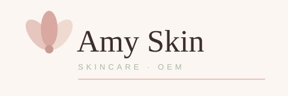
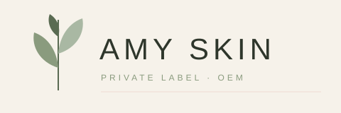
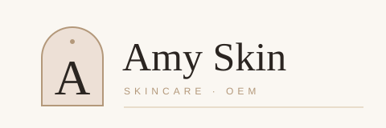

Amy Skin — 3 Logo Directions
For the owner to choose. All three are soft, elegant, premium skincare — cream / blush / sage, refined serif or light sans, delicate petal / leaf / arch marks, lots of white space, clean at small size on a bottle and large on a box. No aqua droplet, no tech look. The rejected modern aqua-droplet logo has been deleted and is not used anywhere on this page.
How to choose: reply A, B or C (or mix, e.g. “A mark + B colours”). After your choice we build the full VI — primary + secondary colours, fonts, clear-space & minimum size, bottle label mockup, box mockup and the website colour scheme — and apply it to the whole site.
A — Blush Petal · Refined Serif
Warm and feminine. Three soft blush petals with a rose centre, beside a Georgia serif “Amy Skin”. Best for a romantic, premium face-care brand.

Palette
backgroundBlush #E7C6C0
petalsRose #C99A92
accentSage #A9B8A3
secondaryInk #3B2E2B
wordmark
Fonts: Georgia serif (wordmark) + Arial light, letterspaced (sub-line). Mark: 3-petal flower. Clear space: one petal height on all sides. Minimum size: 30 mm print / 140 px digital.
On a bottle & a box
B — Sage Botanical · Light Sans
Calm, clean and natural. A slender leaf sprig in sage green, beside letterspaced light sans “AMY SKIN”. Best for a fresh, botanical, “clean skincare” brand.

Palette
backgroundSage #8A9B7E
leavesDeep Sage #5A6B52
stemBlush #EFDAD2
accentInk #2E362B
wordmark
Fonts: Arial / Helvetica light, letterspaced capitals (wordmark + sub-line). Mark: leaf sprig, thin stem. Clear space: one leaf height on all sides. Minimum size: 30 mm print / 140 px digital.
On a bottle & a box
C — Pearl Arch · Monogram
Quiet luxury. A soft blush arch holding a serif “A” monogram, beside a Georgia serif “Amy Skin”. Best for a premium, boutique brand that must look expensive on a box.

Palette
backgroundBlush #EDE0D6
arch fillTaupe #B3987A
arch lineChampagne #D6C3A3
accentInk #2B2521
wordmark
Fonts: Georgia serif (wordmark + monogram) + Arial light, letterspaced (sub-line). Mark: arch + “A” monogram. Clear space: one arch width on all sides. Minimum size: 30 mm print / 140 px digital.
On a bottle & a box
Next step: choose A, B or C. Then we build the full VI from that direction and apply it to the whole site — home, categories, formula pages, process, packaging, certification, About and Get a Quote — in that order: logo → VI → UI → website. Contact: WhatsApp +86 189 2882 3858 · info@amyskinoem.com